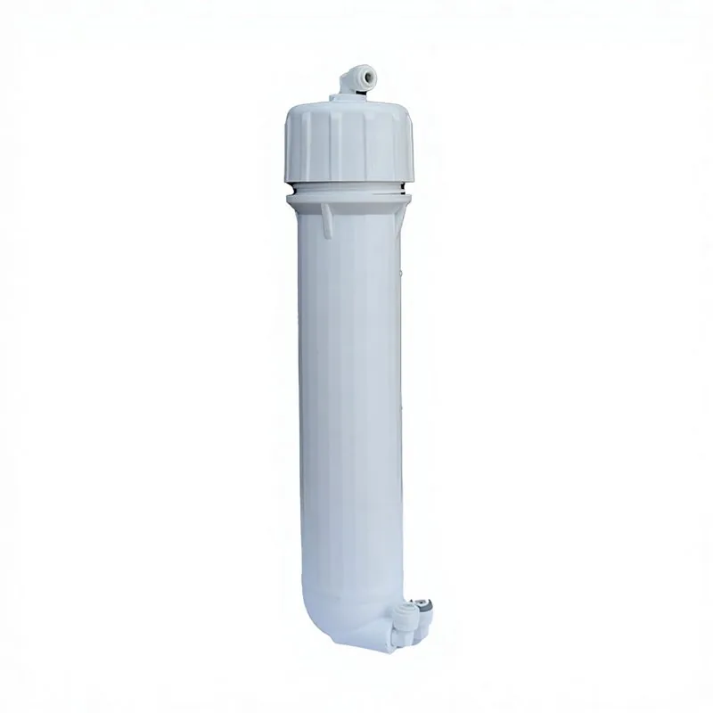

Phần tử màng thẩm thấu ngược (RO) lưu lượng cao 400GPD
Phần tử màng thẩm thấu ngược (RO) lưu lượng cao 400GPD — Loại: Màng khô.
Gửi yêu cầu
Máy lọc nước thẩm thấu ngược lắp dưới chậu rửa nên được lựa chọn dựa trên công suất màng, áp suất nước cấp, bố trí các cấp lọc, vị trí lắp đặt và khả năng tiếp cận để bảo dưỡng. Đối với các chương trình cung ứng cho nhà phân phối hoặc thương hiệu thiết bị gia dụng, hãy xác nhận vòi, cấu hình có bình chứa hoặc không có bình chứa, lõi lọc thay thế và bao bì mang nhãn hiệu riêng trước khi báo giá. Các thông số chính bao gồm Số cấp lọc: Nhiều cấp; Màng: RO 75GPD.
Khi so sánh máy lọc nước thẩm thấu ngược lắp dưới chậu rửa, người mua nên xem xét các yếu tố ngoài tên model và kiểm tra lưu lượng nước đầu ra của màng, trình tự các cấp lọc, dải áp suất đầu vào, khả năng tiếp cận để bảo dưỡng và kiểu lắp đặt. Đối với các chương trình cung ứng máy lọc nước RO OEM, báo giá cũng cần nêu rõ ngôn ngữ trên bảng điều khiển, các tùy chọn vòi hoặc bình chứa, lõi lọc thay thế, vị trí đặt logo và yêu cầu đối với thùng carton xuất khẩu.
Đối với máy lọc nước thẩm thấu ngược lắp dưới chậu rửa, trang sản phẩm này nên giúp người mua hiểu mức độ phù hợp với ứng dụng, khả năng tương thích và yêu cầu đặt hàng. Nội dung hữu ích nhất là thông tin cụ thể theo model thay vì những tuyên bố chung về nhà máy hoặc bán buôn.
| Số cấp | Nhiều cấp |
|---|---|
| Loại | Không cần bơm |
| Màng | RO 75GPD |

Phần tử màng thẩm thấu ngược (RO) lưu lượng cao 400GPD — Loại: Màng khô.
Gửi yêu cầuGửi số lượng, thị trường mục tiêu, ghi chú về cấu hình và yêu cầu đóng gói cho máy lọc nước thẩm thấu ngược lắp dưới chậu rửa. Yuchen Water sẽ xác nhận các tùy chọn phù hợp, phụ kiện và thông tin xuất khẩu trước khi báo giá.